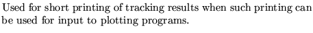
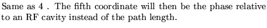
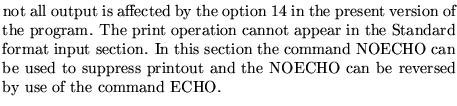

Input formatParameter definitions
OUTPut control ...................(up to 80 characters)
nopt
nopt
0
1
2
3
4 
14 
Note : 
Examples
All three examples come from demo6 and demo7 where they are use extensively to reduce the amount of output produced by the program.
OUTPUT CONTROL 3, OUTPUT CONTROL 1, OUTPUT CONTROL 0,